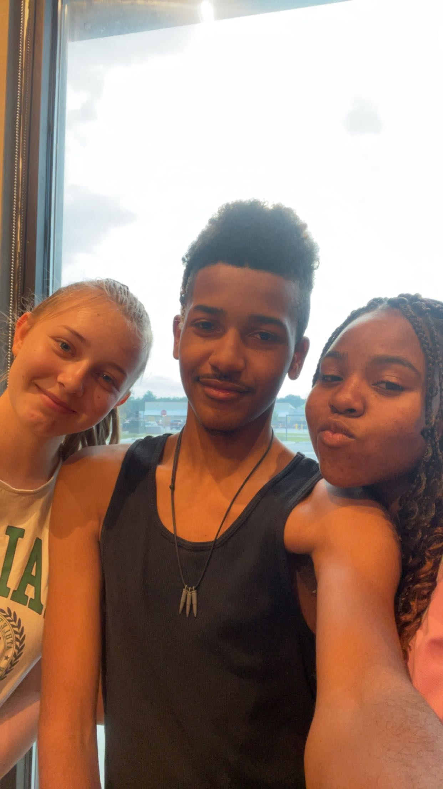
My birthday and me at Starbucks with my friends last year after my birthday party.
// Tribute To The Life of Raphael Jones //

My birthday and me at Starbucks with my friends last year after my birthday party.
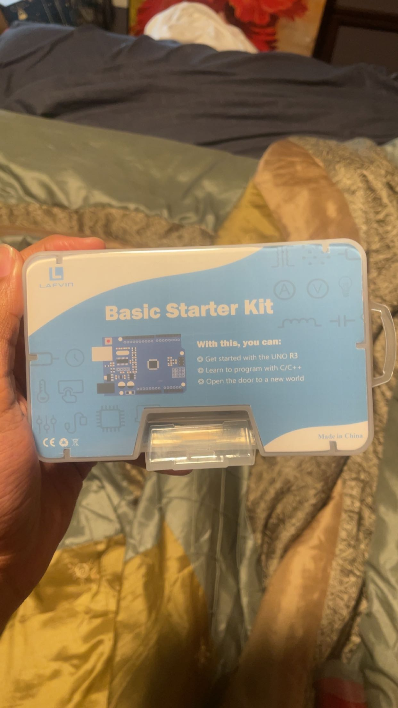
Arduino kit gifted to me by my father.
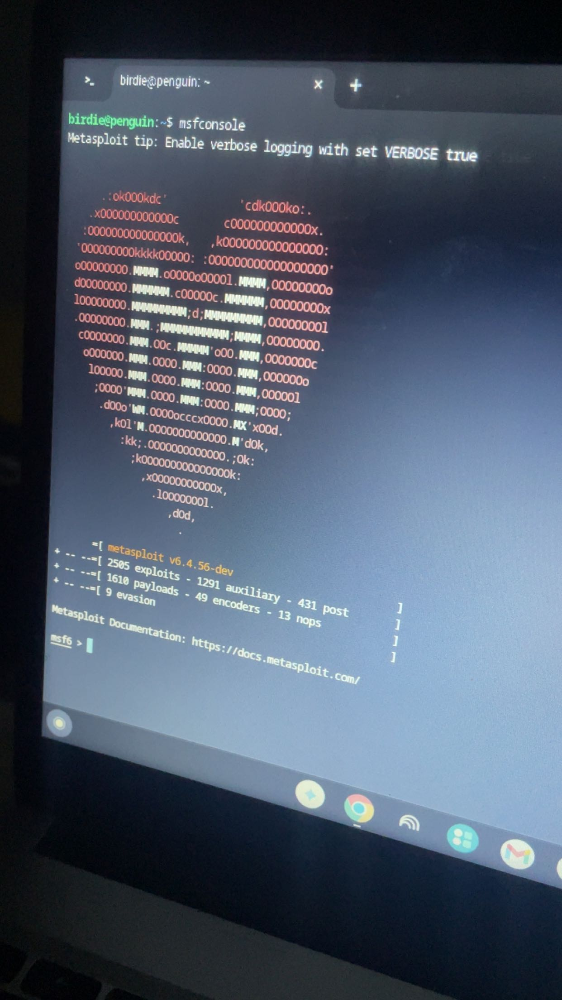
Me running Metasploit on my PC. My favorite Pen-Testing tool for labs and CTF's.
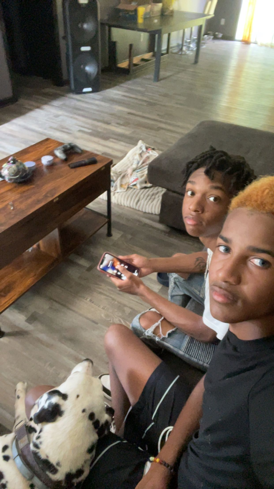
Alessio and I hanging out over the summer.
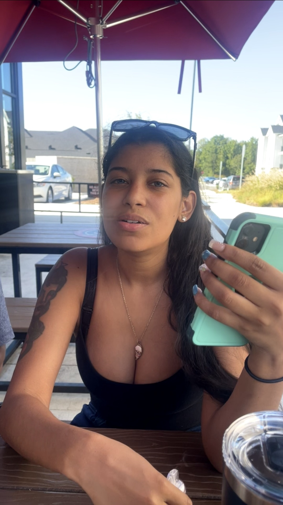
My sister Priscilla and I at a restaurant in Raleigh.
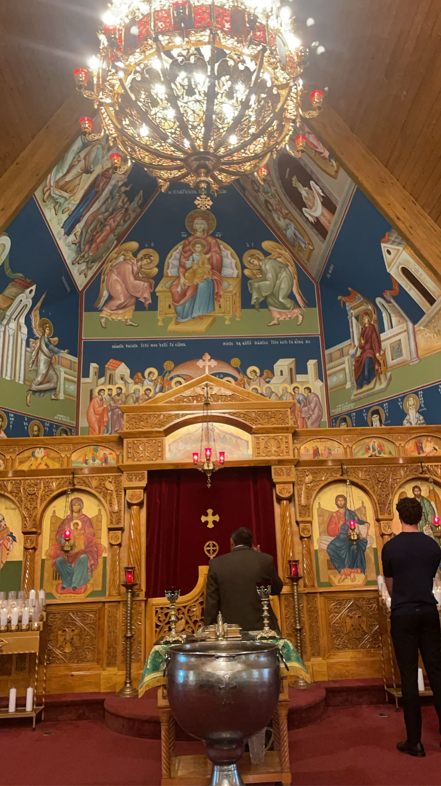
Visiting a Greek Orthodox Church with AJ.
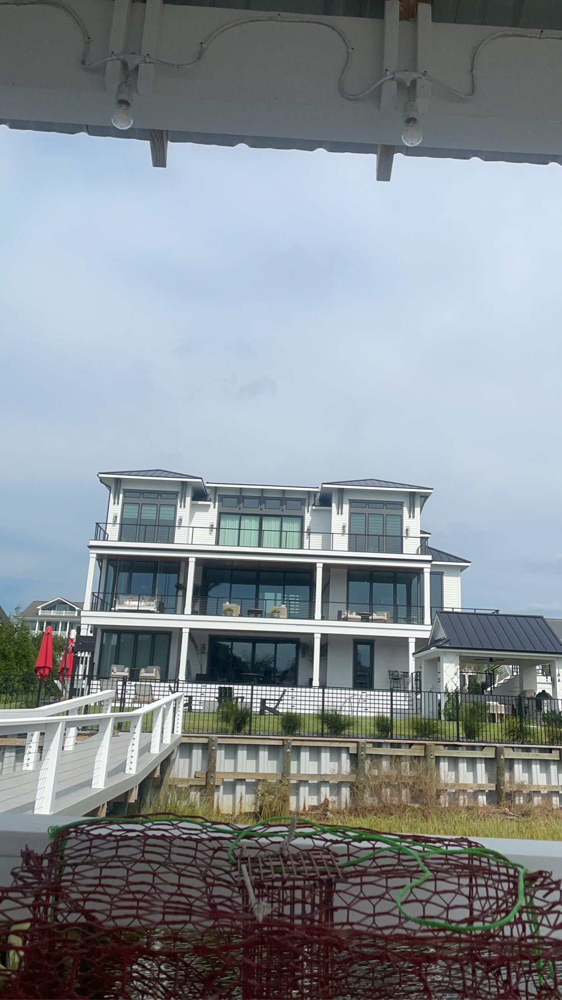
The house of my dad's wealthy friends that I spend a lot of my summer at.
Cooking with my Aunt.
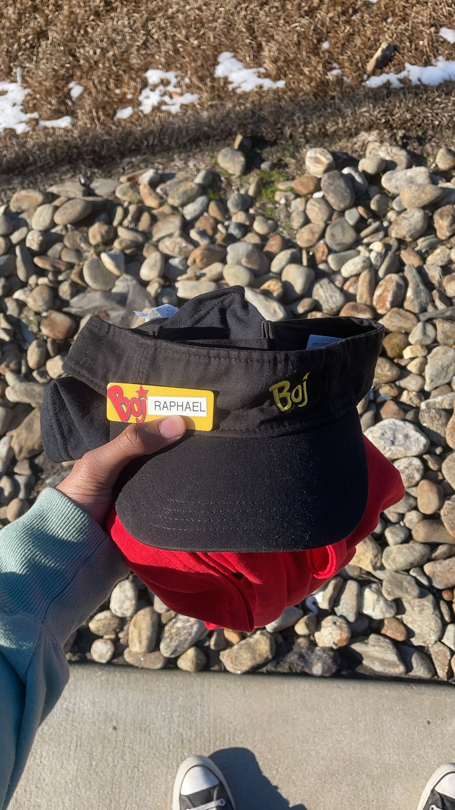
Me feeling proud after getting my first job at Bojangles.
Me and Delilah on a field trip.
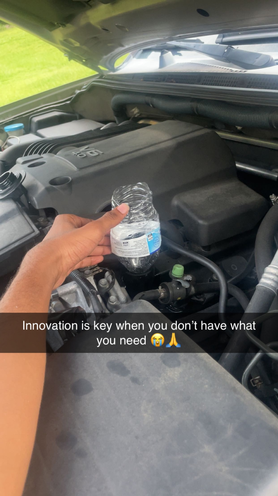
Me changing my oil with half a water bottle as a funnel.
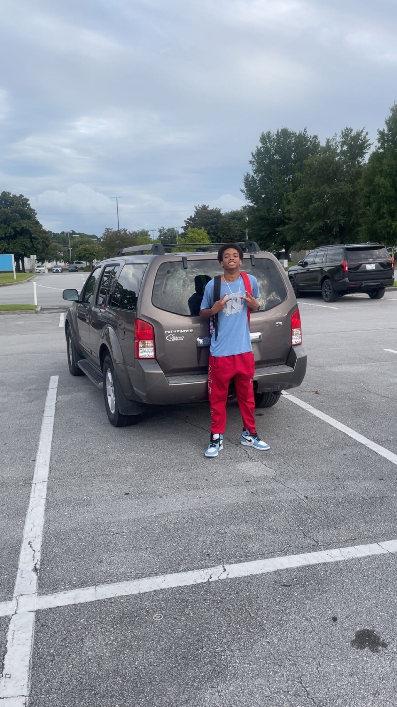
AJ's first time parking after I started teaching him how to drive.
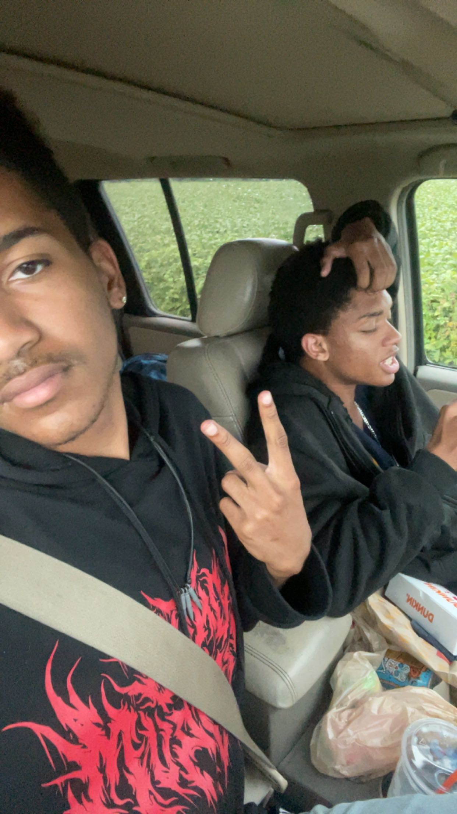
Me and my brother waiting for a tow truck after my transmission blew.
AJ playing the piano at Duke University during a college visit.
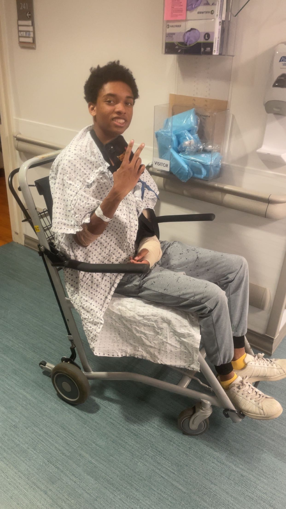
Me visiting AJ in the hospital after his car accident.
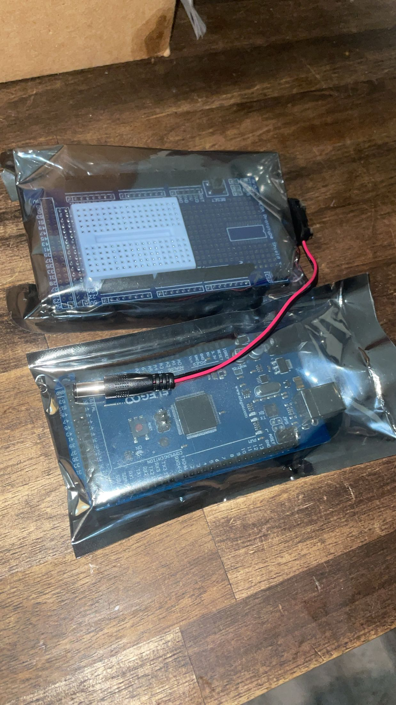
Two circuit boards given to me by my former crush.
AJ's return to church and Baptism.
Senior walk. Walking out in cap and gown, a milestone worth every step.